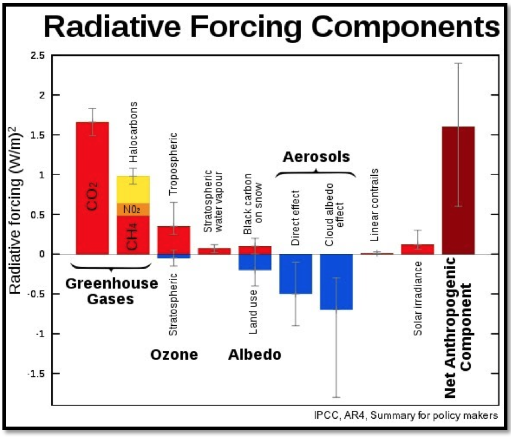
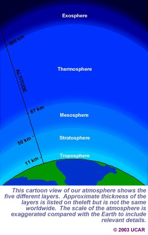

All you need to know about weather and climate systems

ABOUT CLIMATE CHANGE
Weather and Climate
The climate system is composed of weather ad climate weather measures conditions in the atmosphere at any one time through radar and satellite images in real-time. It is relatively predictable and weather systems form and decay over periods of days to weeks. Climate is the average weather for a particular region over time. Climate becomes more stable with patterns over longer periods of time.
The law of energy conservation implies that energy cannot be created nor destroyed it can only be transformed. The law of conservation of mass states that the total amount of mass remains constant in an isolated system in spite of any physical or chemical changes that may take place.
Since certain amount of solar energy falls on Earth's surface (mass) at any given place and time, creating heat (energy). The laws of conservation of mass and energy apply. The earth warms because the same amount of heat energy that hits the earth is not dissipated back out into space. If more heat is re-radiated back out into space than is received, the planet would cool down.
Earth's atmosphere use to balance itself out and be in equilibrium. However, “certain gases in the atmosphere, especially carbon dioxide, prevent re-radiation of longer infrared wavelengths generated by incident solar radiation, holding heat in thus warming the planet”4. This effect is known as the greenhouse effect. “The concentration of carbon dioxide has risen steadily over the last 40 years and continues to rise due to deforestation and burning of fossil fuels. This increase in atmospheric carbon dioxide has enhanced atmospheric heat retention”4 this effect was not detected sooner because of atmospheric pollution. Since particulate matter increased earth's albedo (reflectance of solar irradiation), the earth cooled because it allows less solar energy to penetrate to the surface. Even though volcanic ash in the atmosphere has the same effect the amount man made pollution exceeds natural cooling factors.
Although Greenhouse gases play a major role in warming, “changes to one part of the climate system can cause additional changes to the way the planet absorbs or reflects energy.”2 These secondary changes known as “climate feedbacks could more than double the amount of warming caused by carbon dioxide alone.”2 The primary feedbacks are due to snow and ice, water vapor, clouds, and the carbon cycle; things that are part of the components of the climate system.
Components of the climate system:
• Atmosphere- fastest changing and most responsive component many chemical reactions related to oxygen particles that form ozone and its depletion as a result of CFCs occur here causing earth to warm. Carbon dioxide (and other GHG) are increasing in the atmosphere. Anthropogenic GHG emissions cause global warming.
• Hydrosphere (NOT ocean) – all water; plays a central role through its motion and heat capacity; interacts with the atmosphere on days to thousands of years.
• Cryosphere – anything frozen; largest reservoir of fresh water. When ice melts from the polar caps it pushes the polar climate down and therefore creates harsher winters elsewhere while the polar caps melt and result in an increase in sea-level.
• Geosphere/lithosphere – land serves as mass
• Biosphere – anything living
As a result of climate change, extreme weather events will occur, including: periods of very high temperature, torrential rains and flooding, droughts, and storms. “Over time, regional populations adapt to the local prevailing climate via physiological, behavioral, and cultural and technological responses.”8. “Understanding the health risks from these events is important because the future frequency and intensity of extreme events is expected to change as both climatic means and variability change.” 8
Facts and Fiction 
The Earth's temperature is determined by the difference between incoming solar energy and outgoing thermal radiation from Earth's surface and atmosphere that escapes into space. “This figure from the IPCC summarizes the IPCC’s conclusions on radiative forcing by anthropogenic drivers” 1 and their effect on the earth’s climate.
Red: warming
Blue: cooling
“The column at the far right shows the net global warming induced by humans.” 1 While greenhouse gases warm our climate, and aerosols act to cool it, factors such as ozone and changes in albedo, which is the reflectivity of different surfaces, can work both ways.
Key components shown:
• Greenhouse gases: serve as warming factors, the biggest one being CO2. GHG are responsible for the largest temperature increase. They heat the earth because they absorb the sunrays in the atmosphere
• Ozone: Colorless unstable toxic gas with a pungent odor and powerful oxidizing properties. Stratospheric ozone is a naturally occurring gas that filters the sun's ultraviolet (UV) radiation.
• Albedo: Surface reflectivity
• Aerosols: serve as cooling factors. Common aerosols are in the form of (CFC). These are created by volcanic sulfates and by industrial output.
• Human activities have sent vast amounts of aerosols into the atmosphere in the form of sulphate, black carbon and organic particulates. Black carbon on snow decreases the albedo effect because the black carbon absorbs the sunrays (due to its dark color) rather than letting them bounce back off into space.
“These anthropogenic aerosols are emitted in addition to natural aerosols such as sea salt, sulphate particles in volcanic ash, and sand from the Sahara.”1 With these components more clouds are formed and therefore create a cooling factor in the atmosphere.
The Net Anthropogenic Component is much greater than the solar irradiance, which means that climate change is highly influenced by human activity. As a result climate changes have affected human health and is cause for concern. Greater SPF will and already is needed. We can also see increase in respiratory related diseases as well as an increase in cancer amongst other things.
Climate changes – negative impact on human
• Hot temperatures- more daily deaths and disease events—primarily due to more very hot days8
• Floods- More injuries, deaths and other sequelae (infectious disease, mental health disorders) 8
• Aero-allergen production- Increased allergic disorders (hay fever, asthma) due to longer pollen season 8
• Food-poisoning (diarrhoeal disease)- Greater risks at higher temperature (especially salmonellosis) 8
• Water-borne infection- Cholera risk might be amplified by coastal/estuarine water warming, local flooding 8
• Vector-borne infections- Mosquito-borne infections tend to increase with warming and certain changes in rainfall patterns: heightened transmission. Likewise tick-borne infections, although via more complex ecological changes 8
• Regional crop yields- Reductions in many low-latitude and low-rainfall regions 8
• Fisheries- declines or shifts in local fisheries: protein shortages (in poor populations). Possible increased contamination 8
• Sea-level rise- Health consequences of population displacement, lost livelihood, exposure to coastal storm surges and floods. Salinization of freshwater and coastal soil.8
Atmospheric Composition and Structure. 
Vertical structure of the atmosphere is broken into layers defined by the vertical change of temperature within the layer. Temperature decreases with height unless energy is added.
Troposphere
(Bad Ozone) Humans live here. Living at the surface of the Earth. This is where all weather occurs. The sun heats it. The base of this layer is warmer than its top because the air is heated by the surface of the Earth, which absorbs the Sun’s energy. It’s the lowest part of the atmosphere.
Stratosphere (Good Ozone) contains the ozone, which absorbs rays from the sun. This is where jet airplanes fly. Temperatures increase with altitude because of increasing amounts of ozone. The ozone layer within the stratosphere absorbs harmful ultraviolet rays of sunlight.
Mesosphere
Colder temperature, meteors burn up this layer. As the mesosphere extends upward above the stratosphere, temperatures decrease. There is very little ozone so no solar heating. The coldest parts of our atmosphere are located in this layer and can reach –90°C.
Thermosphere
Contains a layer of charged particles called the ionosphere, which makes communication by satellites possible and is home to the Auroras (Northern Lights). The air is thin, meaning that there are far fewer air molecules. The thermosphere is very sensitive to solar activity and can heat up to 1,500°C or higher when the Sun is active making an aurora that lights up the night sky. Astronauts orbiting Earth in the space station or space shuttle spend their time in this layer. Where satellites orbit the earth.
Exosphere
It is very thin, as it begins to fade into space. This upper layer of our atmosphere is where atoms and molecules escape into space.
http://eo.ucar.edu/basics/wx_1_b.html 7
http://www.windows2universe.org/earth/Atmosphere/layers.html3
Ozone. Comparing and contrasting the two types of ozone depletion.
Ozone is a Colorless unstable toxic gas with a pungent odor and powerful oxidizing properties. The oxygen bonds are formed by electrical discharges or UV light. Ozone is characterized by having three molecular oxygen atoms together. “About 90% of the planet's ozone is in the ozone layer.” 6 The layer of the Earth's atmosphere that surrounds us is called the troposphere. The stratosphere, the next layer up, is known as the good ozone because the stratospheric ozone is a naturally occurring gas that filters the sun's ultraviolet (UV) radiation. A diminished ozone layer allows more radiation to reach the Earth's surface. For humans this is very harmful. Overexposure to UV rays can lead to skin cancer, cataracts, and weakened immune systems. Increased UV can also lead to reduced crop yield and disruptions in the marine food chain.
Ozone depletion has been observed since the late 1970s. Many biological consequences result from the increased UV exposure due to ozone depletion including: increases in skin cancer, damage to plants and reduction of plankton populations.
Ozone depletion is caused by the release of chlorofluorocarbons (CFCs), hydrofluorocarbons (HCFCs), and other ozone-depleting substances (ODS), which were used widely as refrigerants, insulating foams, and solvents. CFCs are heavier than air but they are still carried into the stratosphere in a process that can take up to 2-5 years. Ozone is very stable in the troposphere and in the stratosphere they only degrade under intense UV light. When CFCs and HCFCs reach the stratosphere, the ultraviolet radiation from the sun causes them to break apart and release chlorine atoms, which react with ozone. These chemical cycles of ozone destruction deplete the ozone layer, one chlorine atom can break apart more than 100,000 ozone molecules. “Other chemicals that damage the ozone layer include methyl bromide (used as a pesticide), halons (used in fire extinguishers), and methyl chloroform (used as a solvent in industrial processes for essential applications). As methyl bromide and halons are broken apart, they release bromine atoms, which are 60 times more destructive to ozone molecules than chlorine atoms.” 6
There are two types of ozone depletion:
•The Overall depletion of ozone layer in stratosphere which shows a steady decline of about 4% per decade in the total volume of ozone layer and is mainly caused by CFCs. The chemical reaction discussed above.
•The Ozone hole over Antarctica. This hole is formed in spring and is caused by CFCs that are carried by the wind to that area and result in same chemical reaction caused by CFCs explained above.
“Unlike the Montreal Protocol, efforts to reduce greenhouse gas emissions have more or less failed. Fossil fuels permeate every part of our lives, and until we shift the economy to run on clean energy instead, convincing governments to commit to reductions will be difficult at best.” 5
By Jessica Holoschutz
Bibliography
1 The Research Council of Norway. "Studies of radiative forcing components: Reducing uncertainty about climate change." ScienceDaily. ScienceDaily, 16 October 2010. Web 09 Feb. 2015. sciencedaily.com/releases/2010/10/101015090959.htm>
2 "Global Warming : Feature Articles." Global Warming : Feature Articles. Earth Observatory NASA, n.d. Web. 08 Feb. 2015. //earthobservatory.nasa.gov/Features/GlobalWarming/page5.php>.
3 "Layers of the Earth's Atmosphere." : Troposphere, Stratosphere, Mesosphere, Thermosphere, and Exosphere. Windows to the Universe, n.d. Web. 09 Feb. 2015. //www.windows2universe.org/earth/Atmosphere/layers.html>.
4 "Global Warming." Global Warming. OSS Foundation, n.d. Web. 09 Feb. 2015. //www.zo.utexas.edu/courses/Thoc/Global-Warming.htm>.
5 "Ozone Depletion and Climate Change." ClimateSight. N.p., 30 Mar. 2011. Web. 08 Feb. 2015. //climatesight.org/2011/03/30/ozone-depletion-and-climate-change/>.
6 "Brief Questions and Answers on Ozone Depletion | Ozone Layer Protection | US EPA." EPA. Environmental Protection Agency, n.d. Web. 07 Feb. 2015. //www.epa.gov/ozone/science/q_a.html>.
7 "The Layered Atmosphere." The Layered Atmosphere. National Centre for Atmospheric Research, n.d. Web. 08 Feb. 2015. //eo.ucar.edu/basics/wx_1_b.html>.
8 F Anthony J McMichae, PHD, Rosalie E Woodruff,, PHD, and , Simon Hales, PHD. "Climate Change and Human Health: Present and Future Risks." The Lancet. National Centre for Epidemiology and Population Health, The Australian National University, Canberra 0200, Australia, 9 Feb. 2006. Web. 9 Feb. 2015. %3A%2F%2Fwww.sciencedirect.com%2Fscience%2Farticle%2Fpii%2FS0140673606680793>.